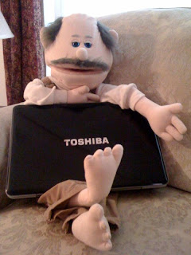

Jim Burke's "Small, Small, World"
6/27/2010
{kind=link}

“…Serve one another through love” (Gal. 5:17)
By Jose Jimenez (photo right)
Jim and I had a recent conversation. To the best of my recollection it went something like this.
Jim and I had a recent conversation. To the best of my recollection it went something like this.
“What? I was made to perform. I don’t understand why I have to hold the computer in this back pack. It is not so comfortable being doubled up, you know. And travelling in a small compartment on a plane for 10 hours to Paris, and another five hours to Cairo? You’ve got to be kidding. Then, you want me to be hauled around on a bus for who knows how long inside an even more cramped space? Thanks but no thanks. I don’t think I’ll do it.”
“Your call, Jose, but Sharon and I are really looking forward to this trip to the Holy Land. We will be taking the Exodus route from Egypt to Israel, and if you want to go there is no other way.”
“Give me one good reason why I should do so,” I responded.
‘How about, you never know when you might be needed to serve others?” Jim replied.
“But, it will be uncomfortable,” I tried to explain.
“Oh, that’s a good one,” Jim said tongue- in -cheek. “After all, that’s what the Master said. We should serve others when it is comfortable for us.”
“What if you don’t even need me?” I wanted to know. “I might go all that way and you won’t even need me around.”
“I may not need you,” Jim answered. At least he was being truthful. “But, I don’t know what I don’t know. If I didn’t think there was a possibility that some people might need a laugh or two, I wouldn’t ask you to go.”
“Can you give me any guarantees that people will appreciate us if I do make an appearance?” I asked.
“Well, Jose, if you are dependent on affirmation from others, it would be best to go ahead and stay. Being a servant is never about our personal affirmation.” Jim started to put me back into the room with the other buddies in our small, small world.
“Wait, wait, wait…” I exclaimed. I have to admit I was feeling a little guilty. “Let’s not be too hasty here. You did say that there was a possibility that I might be of use?”
“Yep.”
“Okay, pack me up. I’ll give this servant bit a whirl.”
(16 days later—after returning from the Holy Land)
“What do you think now?” Jim asked.
“Wow! How was I to know that our plane would be delayed four hours in Atlanta, and that we would need to spend an extra night in Paris before going to Cairo since we missed the connection? When you had me entertain that family from Syria at the dining table, and those two sisters going to India, we all had a ball. Even the waitress asked me for my food waiver before it was said and done! Who would have known that she would have entered into the time of jocularity?
‘How about, you never know when you might be needed to serve others?” Jim replied.
“But, it will be uncomfortable,” I tried to explain.
“Oh, that’s a good one,” Jim said tongue- in -cheek. “After all, that’s what the Master said. We should serve others when it is comfortable for us.”
“What if you don’t even need me?” I wanted to know. “I might go all that way and you won’t even need me around.”
“I may not need you,” Jim answered. At least he was being truthful. “But, I don’t know what I don’t know. If I didn’t think there was a possibility that some people might need a laugh or two, I wouldn’t ask you to go.”
“Can you give me any guarantees that people will appreciate us if I do make an appearance?” I asked.
“Well, Jose, if you are dependent on affirmation from others, it would be best to go ahead and stay. Being a servant is never about our personal affirmation.” Jim started to put me back into the room with the other buddies in our small, small world.
“Wait, wait, wait…” I exclaimed. I have to admit I was feeling a little guilty. “Let’s not be too hasty here. You did say that there was a possibility that I might be of use?”
“Yep.”
“Okay, pack me up. I’ll give this servant bit a whirl.”
(16 days later—after returning from the Holy Land)
“What do you think now?” Jim asked.
“Wow! How was I to know that our plane would be delayed four hours in Atlanta, and that we would need to spend an extra night in Paris before going to Cairo since we missed the connection? When you had me entertain that family from Syria at the dining table, and those two sisters going to India, we all had a ball. Even the waitress asked me for my food waiver before it was said and done! Who would have known that she would have entered into the time of jocularity?
And, man, oh man, oh, man. Did you hear the laughter of the group that evening around the dining tables after a day of visiting the incredible sites around Jerusalem? I’m so glad I began horsing around. Everyone was tired, but what a time! All of a sudden they weren’t so tired any longer. No wonder Jesus wanted us to be servants. That’s where the greatest joy is found!
“So, are you ready to ‘take up the towel’ again?” Jim asked. I knew he had in mind another trip. Admittedly, the jet lag was not my friend.
“Yep. Only one question” I responded.
“What’s that?” Jim wanted to know.
“Would you consider getting a bigger back pack or a smaller computer?” I started to do some bending and stretching exercises. Somehow, I already knew what the answer would be.
Jose Jimenez